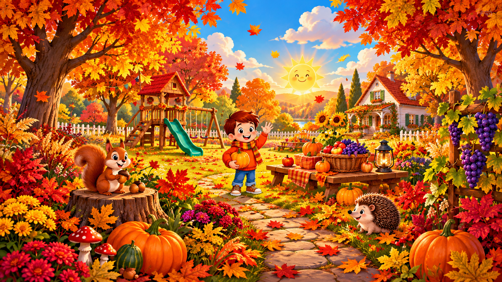
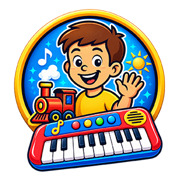

OTTHON
Dalok böngészése →Szülőknek
Gyorsan található dal közös énekléshez, autózáshoz, esti lecsendesedéshez vagy egyszerűen csak egy vidám tíz perchez.

MAGYAR GYEREKDALOK · MONDÓKÁK · JÁTÉKOK
Több mint 300 videó, klasszikus mondókák és népdalok új köntösben, saját dalok és játékok. Otthonra, óvodába és bölcsődébe, könnyen böngészhető témák szerint.
Járművek · állatok · évszakok · ünnepek · népdalok · játékos tanulás
Integetünk nektek! Indítsd el a kis bemutatkozásunkat.
KINEK SZÓL A MAZSOLA KLUB?
Gyorsan található dal közös énekléshez, autózáshoz, esti lecsendesedéshez vagy egyszerűen csak egy vidám tíz perchez.
Évszakok, ünnepek, mondókák és tematikus dalok egy helyen, hogy ne a kereséssel menjen el a foglalkozás előtti idő.
Ismerős témák, könnyen követhető refrének, színes videók és saját Mazsola Klub játékok.
MELYIK KALAND JÖJJÖN MA?
KEDVENCEK MOST
Hat jó belépő a Mazsola Klub világába.
A dalok betöltése…
A dalok listája most nem tölthető be. Nézzétek meg a csatornán ↗
Nincs ilyen találat. Próbálj másik szót vagy témát!
A dalok YouTube-lejátszóval indulnak. A videók, játékok és tematikus válogatások folyamatosan bővülnek.
MAZSOLA KLUB VILÁG
Színes figurák, ismerős témák és magyar gyerekdalok, amiket jó újra és újra együtt felfedezni.

ZONGORA JÁTÉK
A Mazsola Klub saját, Androidon futó zongorajátéka játékosan vezeti be a gyerekeket a zenélés világába. A zongorán 7 különböző hangszerhang közül lehet választani, a gyakorlást metronóm, 3 egyszerű kotta és bekapcsolható visszhang effekt teszi még izgalmasabbá.
JÁRMŰMOSÓ JÁTÉK
Válassz 30 különböző jármű közül, majd mosd őket tisztára magasnyomású mosóval, pink habbal, szivaccsal és tiszta vízzel. Ha elkészültél, jön a konfetti, a duda és a csillogó jármű, közben pedig megpróbálhatod megdönteni a saját legjobb idődet.
HALLOWEENI CSOKIGYŰJTŐ JÁTÉK
Gyűjts minél több édességet a Halloween-városban, ugord át a békákat, és próbáld megdönteni a saját rekordodat. Nyolc választható karakter, dupla ugrás, zene és játékos Halloween-hangeffektek várnak.
ÓVODÁKNAK ÉS BÖLCSŐDÉKNEK
Reggeli körhöz, évszakos témákhoz, ünnepekhez, mondókázáshoz vagy játékos tanuláshoz böngéssz a kategóriák között. A lejátszás közvetlenül a Mazsola Klub YouTube-videóival indul.
TÖBB MINT EGY YOUTUBE-CSATORNA
A Mazsola Klubot egy saját magyar gyerekvilágként építjük. Több mint 300 videó, mondókák, népdal-feldolgozások, saját gyerekdalok és Android-játékok tartoznak ugyanahhoz a színes, felismerhető Mazsola Klub világhoz.
A témák a gyerekek mindennapjaiból jönnek: járművek, állatok, évszakok, ünnepek, természet, óvodai helyzetek és magyar hagyományok. A cél egyszerű: könnyen követhető, családbarát tartalom, amit jó együtt nézni, hallgatni és játszani.
Szülőként gyorsan találsz dalt egy adott pillanathoz, óvodapedagógusként vagy kisgyermeknevelőként pedig témák szerint tudsz válogatni. Ha pedig a képernyőn túl is jöhet egy kis játék, ott vannak a saját Mazsola Klub alkalmazások.
GYAKORI KÉRDÉSEK
Elsősorban bölcsődés, óvodás és kisiskolás gyerekeknek készítünk tartalmakat. A dalok hangulata és témája eltérő, ezért a katalógusban érdemes témák szerint böngészni.
Igen. Évszakok, ünnepek, mondókák, állatok, járművek és játékos tanulás szerint is lehet válogatni. Külön oldalt is készítettünk óvodapedagógusoknak és kisgyermeknevelőknek.
A dalok a Mazsola Klub YouTube-csatornáján érhetők el. A weboldalon a katalógusból közvetlenül elindíthatók a videók.
Igen. A Szinti, a Mosó és a Halloween játék külön bemutatóoldalt kapott, ahol a funkciók és az adatvédelmi információk is megtalálhatók.